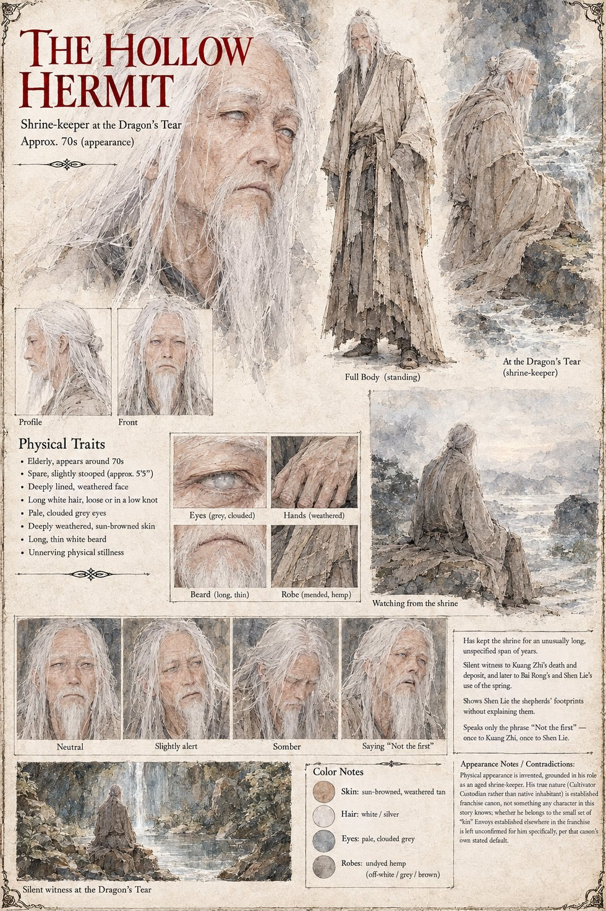

The Hollow Hermit
Cultivator Envoy and Custodian of record for Case 0247 · shrine-keeper at the Dragon's Tear · appears in his seventies by his sheet
An old man who keeps the shrine at the northern lip of the pool, in a hut no larger than a single room, and has kept it for a span of years no single lifetime should reasonably cover and the valley below cannot agree on. They call him the Hollow Hermit and leave rice and oil at his door twice a year, more from habit than devotion, since he asks nothing of anyone and answers almost nothing when asked. When Kuang Zhi crosses the last of the scree and sinks to his knees at the water, the hermit offers no hand and says only Not the first, and nothing else for the rest of that day or the next. He sits three feet away through the night and does nothing whatsoever to prevent the old master's death.
His file is that of a Custodian, Terrarium Designation Qingxuan, kept in the third person and the dry language of the office, and it records what the valley never learns: that the deposit was self-directed and no Cultivator guidance was offered, that a seventy-two-hour monitoring window he requested was denied on the standing ground that seventy-two hours has been enough in three hundred and eleven years of comparable observation, and that three shepherds drank at the southern bank eighty-nine hours after the master died. He watches Bai Rong's hands find the Founder's Welcome from thirty feet off, behind a fold of rock, and logs everything but what he feels, because the ledger keeps no field for it. When Shen Lie seizes his robe and demands to know what he means, he says the same two words again and turns his palm up to show three sets of footprints already three days stale. No one in the whole account thinks to ask him anything at all. His closing log finds no error in its finding and notes that being correct has not made it easier to file; he has asked to be reassigned, and the request is pending. His sheet says outright that his appearance is invented from his role; the manuscript describes him only as an old man.
Appears In

Related Subjects


Related Records

Kuang Zhi at the water before dawn, his whole face beneath the surface and his blood on the stone beside the blade, as the Hollow Hermit sits three feet away and does nothing whatsoever to prevent it.

Bai Rong lowers his face beneath the water where Kuang Zhi died, and Shen Lie counts eleven held breaths while the Hollow Hermit watches from the rock, saying nothing.